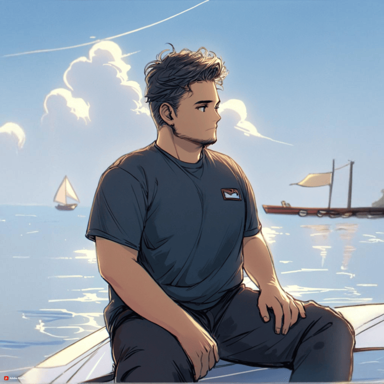

Meningkatkan Visibilitas Brand Melalui Strategi Digital yang Terukur.
Halo, saya Angger Aji Kusuma.
Seorang Digital Marketing Specialist yang bersemangat dalam membangun kehadiran online yang kuat. Saya mengubah data menjadi strategi kreatif untuk meningkatkan engagement, mendatangkan traffic organik, dan mencapai tujuan bisnis Anda.
SOCIAL MEDIA STRATEGY
SEO & CONTENT
WEB DEVELOPMENT
PROFESSIONAL EXPERIENCES
November 2022 - Present
Digital Marketing Specialist | CV Maha Niaga Artha
- Mengelola 5+ akun media sosial brand, berhasil meningkatkan engagement rate rata-rata sebesar 35% dalam 6 bulan.
- Merancang dan mengeksekusi kalender konten bulanan, menghasilkan peningkatan jangkauan organik hingga 50% di platform utama.
- Mengembangkan dan mengoptimalkan website perusahaan, yang berkontribusi pada peningkatan leads sebanyak 20% melalui optimasi SEO On-Page.
Januari 2024 - Present
Founder & Digital Strategist | Siinmedia
- Mendirikan Siinmedia untuk membantu UKM go-digital, berhasil mengakuisisi 10+ klien dalam tahun pertama.
- Memberikan layanan SEO yang membawa website klien masuk ke halaman pertama Google untuk 3+ kata kunci utama yang kompetitif.
- Mengelola proyek pengembangan web end-to-end, dari desain UI/UX di Figma hingga implementasi dan maintenance.
EDUCATION
2019 - 2022
Hasan Kafrawi High School
Software Engineering Major
SKILLS
CONTENT PLANNING
SEO (ON-PAGE & OFF-PAGE)
CONTENT CREATION
GRAPHIC DESIGN
WEB DEVELOPMENT
SOCIAL MEDIA ADS
TOOLS
FIGMA
NOTION
TIKTOK ADS
META ADS
CANVA
GOOGLE ANALYTICS
Studi Kasus: Web Development & SEO


Proyek-proyek di atas adalah bukti nyata bagaimana saya menerapkan keahlian dalam web development, SEO, dan manajemen media sosial untuk memberikan hasil yang berdampak. Dari membangun platform e-commerce hingga menumbuhkan audiens untuk brand F&B.
Studi Kasus: Manajemen Media Sosial
Cah Jepara Official
Peran: Social Media Manager, Content Creator
Hasil: Menumbuhkan audiens dari 0 menjadi 10.000+ followers dalam 3 bulan melalui konten video viral dan strategi engagement.
Estehi Bukota
Peran: Content Strategist
Strategi: Mengembangkan pilar konten F&B yang relevan dengan tren untuk meningkatkan brand awareness di kalangan Gen-Z.
Raja Steak
Peran: Social Media Ads Specialist
Hasil: Menjalankan kampanye TikTok Ads yang berhasil meningkatkan kunjungan outlet sebesar 25% dengan ROAS 3x.